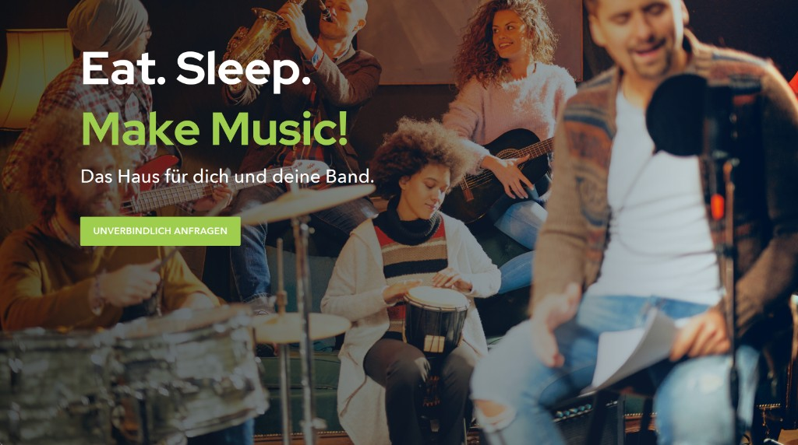
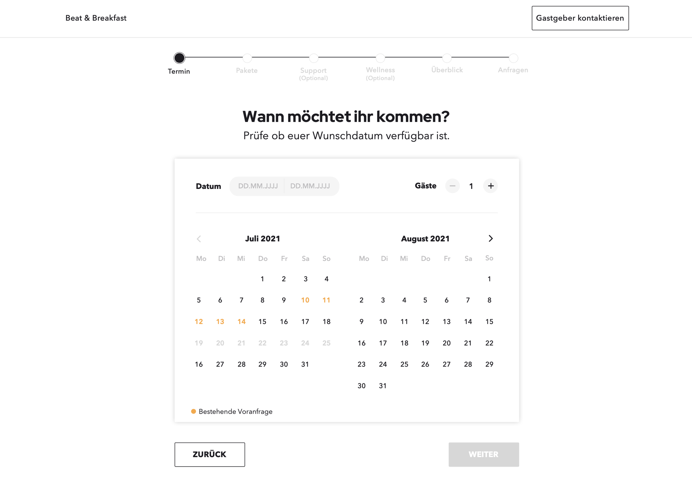
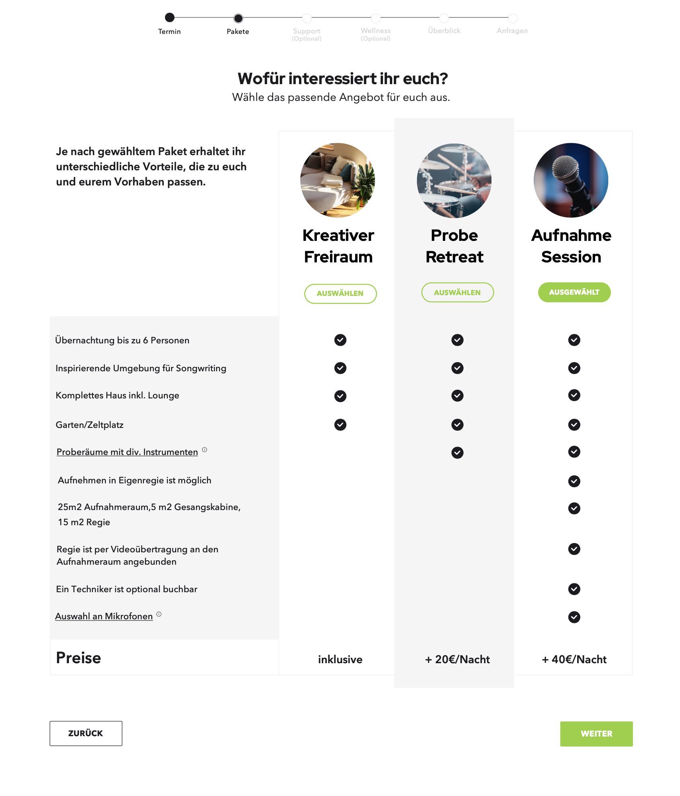
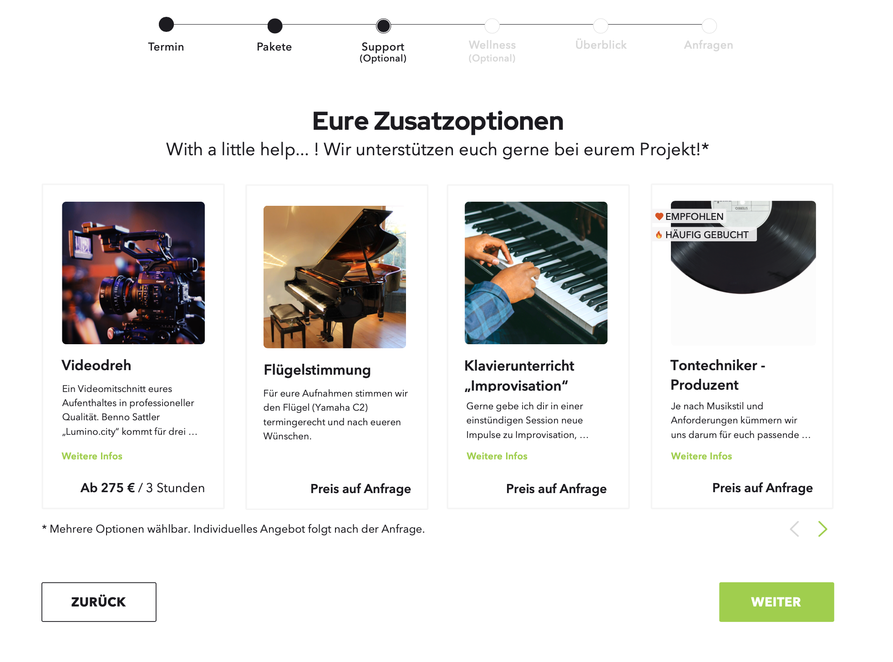
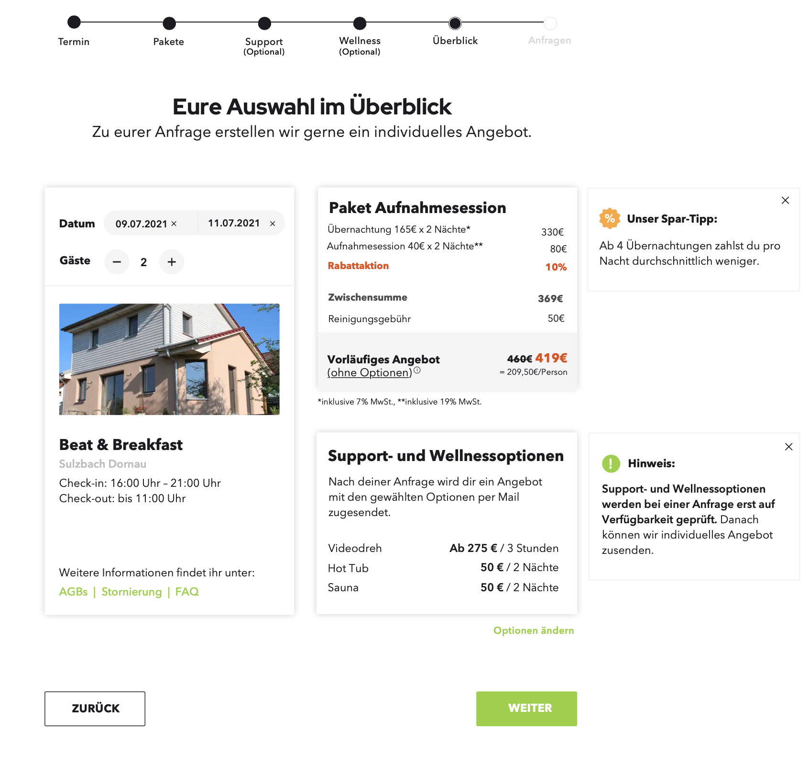
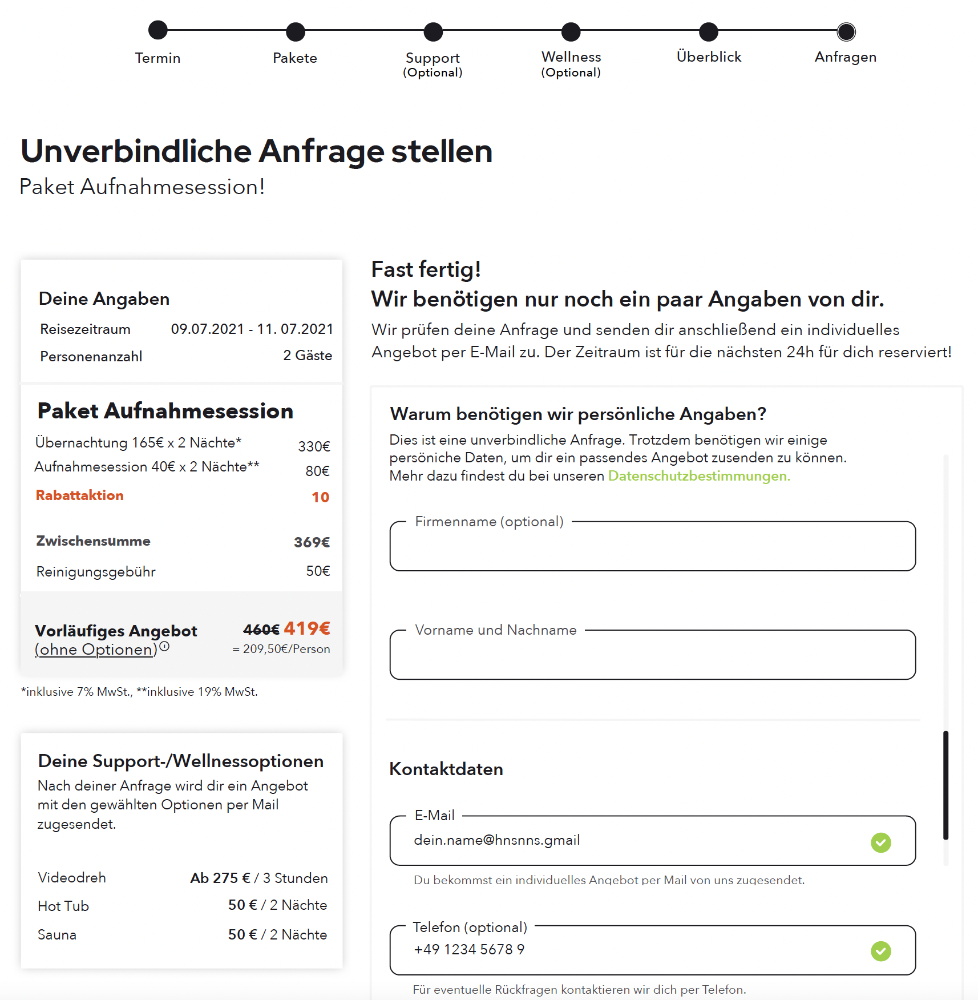

How do you design
Bookings without Pricing?

Beat and Breakfast
A holiday home for musicians — vacation with recording studio and rehearsal room. When I joined, bookings ran through email with no transparent pricing online. The challenge: move the on-/offline booking flow from email traffic to a smooth online process, show pricing clearly, represent all B&B offers on the website, and communicate house rules transparently.
Website
Represent accommodation, rehearsal, recording, and wellness extras — with clear navigation and a visual language that matches the creative, hands-on spirit of the house.


Logo/Icon design
Built from the letter B, sound bars, and a house shape — a mark that reads as both music and lodging. Four color variants for web, print, and dark backgrounds.
Icon kit
Custom amenity icons for the Ausstattung section — making a long list of features scannable at a glance, from kitchen and sauna to piano and hot tub.
Booking flow
From email-based requests to a transparent online booking experience — with clear pricing, house rules, and add-on options visible before guests reach out.



The outcome and learnings
The site launched at beatandbreakfast.de — replacing email back-and-forth with a bookable online presence, transparent pricing, and a clear overview of every offer. Deliverables included brand identity, website UX/UI, booking plugin design, offer documentation, and an amenity icon system. The client keeps full control over content updates in WordPress. Designing for a musician audience meant leaning into bold typography and a hands-on, creative feel — not a generic hospitality template.